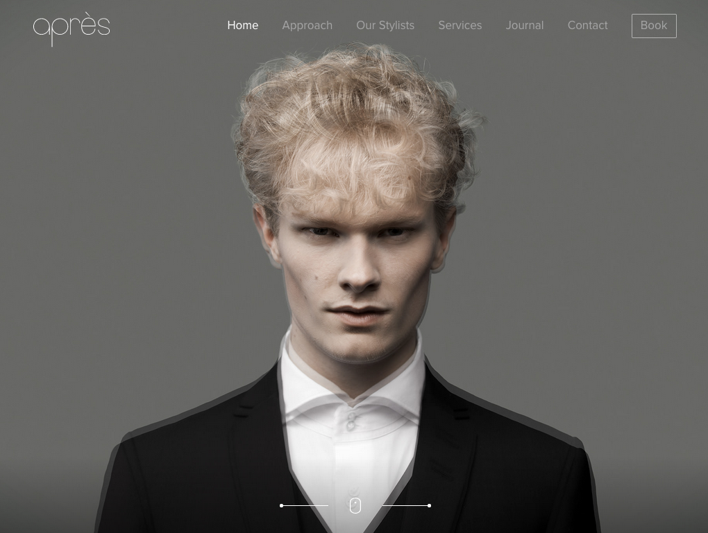

The Apres website is really cool. On the main page there is an image of a man that they styled. If you move from one side of the webpage to the other, the styling of the man's hair slowly changes. I think that is a great idea because the website is for a salon. Another cool thing is when viewers move to another page quotes about the salon come up while you wait for the page you want to go to. I think that was a good idea because it makes you think possitively about the salon.
